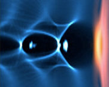
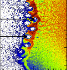

The UCLA Simulation of Plasmas Group was formed in 1973 by the late John M. Dawson. Under his leadership the group developed a suite of FFT based (spectral) PIC codes [Reviews of Modern Physics Article]. The group used these codes to study problems involving basic and applied plasma physics in magnetically confined plasmas, space plasmas, radiation sources, intense short laser and beam plasma interactions, and in plasma based acceleration. The group invented the laser wakefield and plasma wakefield accelerator concepts and pioneered using parallel computing for PIC codes, including the first paper on domain decomposition for PIC codes. It also invented the subtraction technique to identify wakes made by single particles from thermal fluctuations.
The group has been led by Warren B. Mori (the Director of PICKSC) since 1998 and since then has been a leader in the use of parallel PIC codes in plasma-based acceleration, in laser plasma interactions of interest to inertial fusion energy, and in relativistic shocks. The group pioneered the development and use of parallel PIC simulations for short pulse laser and beam plasma interactions, for the moving window technique for plasma based acceleration, for three dimensional quasi-static PIC techniques, and for the use of ponderomotive guiding center techniques in PIC codes. It was a leader in the development of Lorentz boosted frame techniques and has recently been at the forefront in eliminating the numerical Cerenkov instability. Together with its collaborators, it has been a leader in the development of the nonlinear blowout regime for plasma based acceleration, including beam loading, as well as the development of novel self-injection techniques into plasma wakefields. It has been at the forefront of using the synergy between full-scale modeling and experiments to unravel ultra-fast and intense laser and beam plasma interactions. The group has also been at the forefront in developing generalizable algorithms for PIC to run on many core platforms such as GPUs.
The research efforts of the group remain in high performance computing, in plasma based acceleration and light sources, and in the nonlinear optics of plasmas in high energy density plasmas, including research into high intensity and relativistic laser and beam plasma interactions, inertial fusion energy, and relativistic shocks.
PICKSC was formed to allow the home-grown PIC and kinetic simulation software of the UCLA Plasma Simulation Group to have a broader impact.
Below, we highlight recent research activities of the group including research on new algorithms and simulation techniques.
Below, we highlight recent research activities of the group including research on new algorithms and simulation techniques.Developing sustainable and re-useable PIC and other kinetic software for high performance computing. PICKSC members and its collaborators are researching software engineering issues for how to modularize a PIC Framework and PIC production codes, on isolating PIC software that needs to be modified for next generation hardware with many layers of memory and parallelism, on striking the best balance between a general Framework and production codes, on developing new physics packages and the ability of models to work together, on documenting software, on benchmarking and comparison activities of the models and solvers that are supported, on developing examples of best practices, on educational software for undergraduate and graduate courses in plasma physics and computer science, and on maintaining a set of stable production codes for general use. Read more.
Plasma based acceleration and intense laser and beam plasma interactions. PICKSC members and its collaborators are engaged in research aimed at advancing the understanding of basic high-energy density physics (HEDP) in the area of intense laser and particle beam plasma interactions, and employing this understanding to aid in the development of plasma-based accelerator (PBA) stages for use in high energy physics colliders, next-generation light sources, medicine, and homeland security. Read more.
The nonlinear optics of plasmas and inertial confinement fusion. PICKSC members and its collaborators are engaged in research to significantly advance the fundamental understanding of the nonlinear optics of plasmas and electron transport in high-energy-density laboratory plasmas (HEDLP), including conditions of relevance to Inertial Fusion Energy and the National Ignition Facility. Read more.